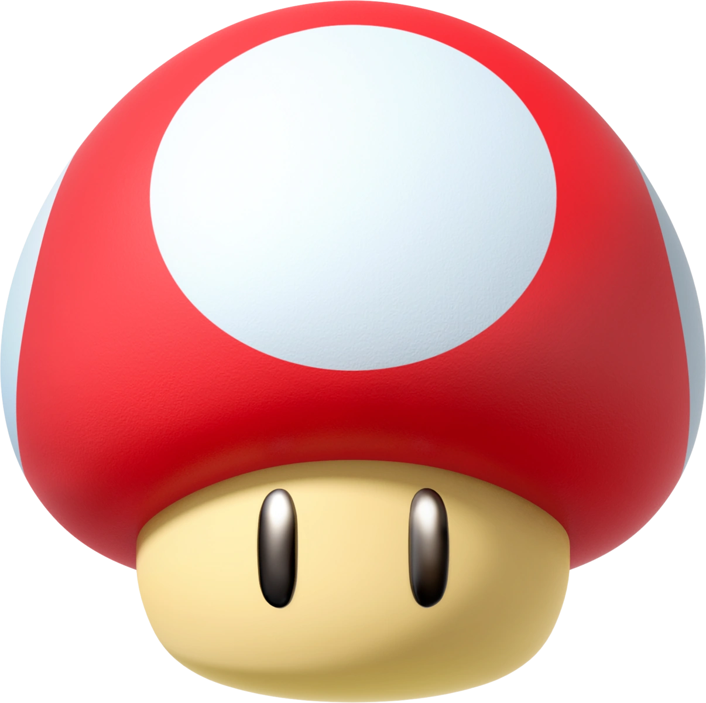
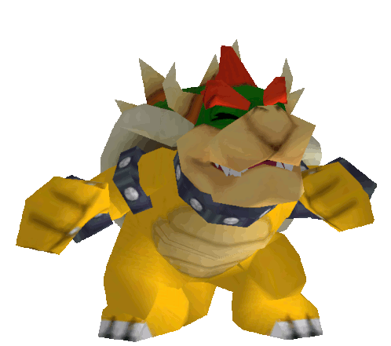
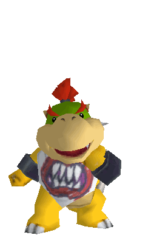
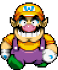

Hello, I'm Mario 🥸

Mario est un personnage de jeu vidéo devenu la mascotte de Nintendo, facilement reconnaissable à sa moustache, à sa salopette bleue, à ses gants blancs et à sa casquette rouge marquée d'un M inscrit dans un cercle blanc.
Missions Ⓜ️
Mario s'est fait une spécialité de sauver les princesses en détresse et notamment la Princesse Peach (souvent enlevée par Bowser ou Bowser Junior), dont il semble amoureux, ce qui est peut-être réciproque. Bien que cette mission soit présente dans de nombreux jeux, il arrive parfois à Mario de sauver Daisy ou encore Pauline, notamment dans Donkey Kong et dans la série Mario vs. Donkey Kong qui a 6 volets.
Ennemis principaux 👺
- Bowser
- Bowser Jr.
- Wario